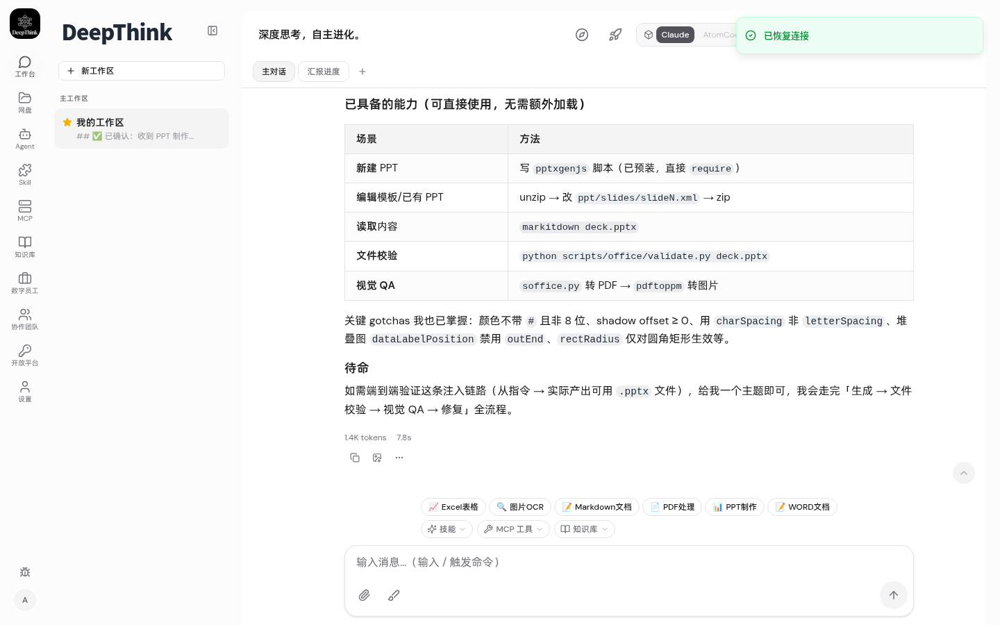
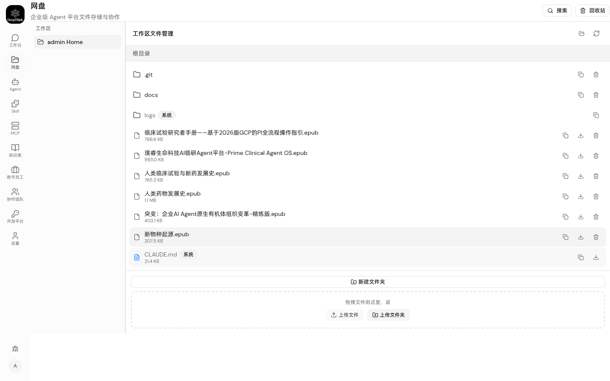
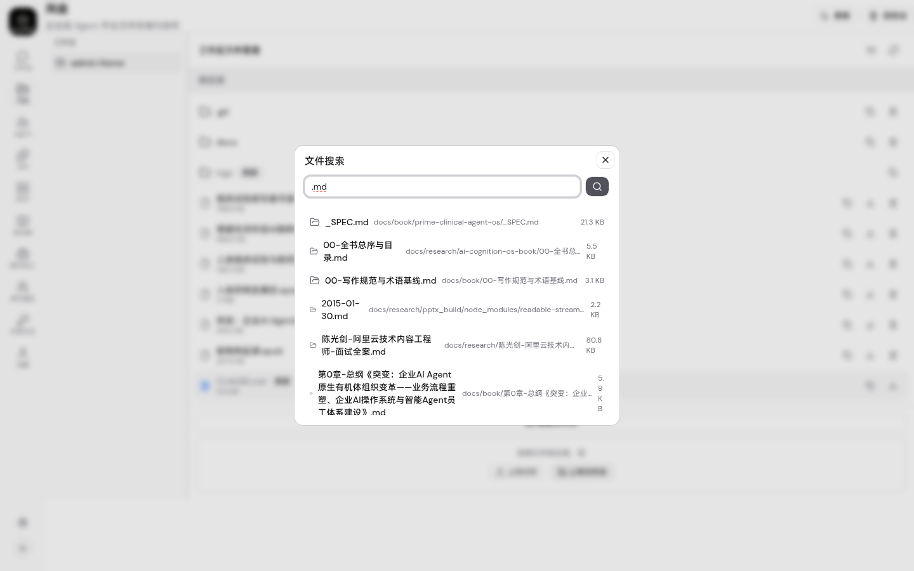
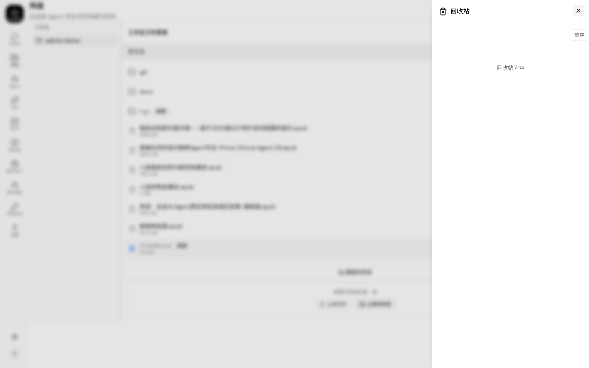
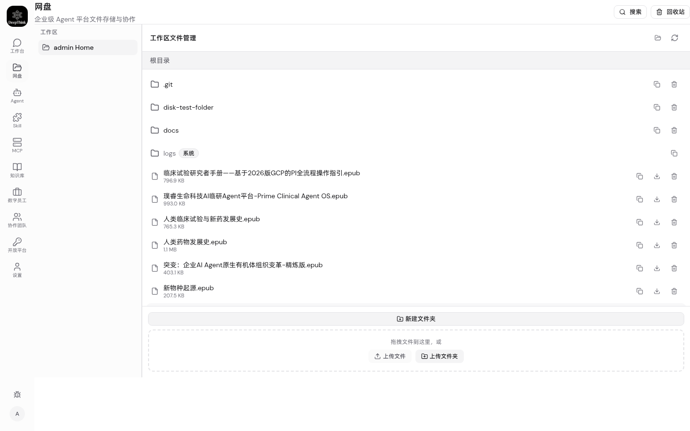

AgentNet Disk — 测试报告
1. 总览
AgentNet Disk 在 DeepThink 现有 TS+SQLite+本地 fs 架构上演进交付：文件管理（复用 FilePanel）、
软删除回收站、版本快照、文件搜索、移动/重命名、Agent disk_* 工具、独立 /disk 全页。
唯一未通过项（T8 文件预览）为 playwright 选择器在新建文件夹后视图变化导致的误报，非产品缺陷。
2. 验收标准矩阵
路由注册 + lazy 加载 + 工作区侧栏 + FilePanel 复用
useChatStore.groups → 侧栏列表，click 切换 FilePanel groupJid
DELETE → moveToTrash(.trash/{id}/) + file_trash 表，DB 失败回滚 restoreFromTrash
POST trash/:id/restore + DELETE trash/:id + DELETE trash（清空）+ Sheet 抽屉 UI
PUT 内容/二进制 → saveVersionSnapshot(.versions/{b64}/{n}.bin) + file_versions 表，保留 20 版自动修剪
GET versions/:path + GET versions/:path/:version + POST restore
GET files/search?q= → 176 结果（.md 关键词）
POST files/move + POST files/rename
7 工具：disk_list/upload/download/create_folder/search/move/delete，tsc 0 error
3. 后端验证
类型检查
npx tsc --noEmit -p . → exit 0 （0 error 0 warning）
新增路由（9 条）
| 方法 | 路径 | 功能 | AC |
|---|---|---|---|
| GET | /:jid/files/search | 文件名关键词搜索 | PASS |
| POST | /:jid/files/move | 移动文件/文件夹 | PASS |
| POST | /:jid/files/rename | 重命名 | PASS |
| GET | /:jid/files/trash | 回收站列表 | PASS |
| POST | /:jid/files/trash/:id/restore | 恢复 | PASS |
| DELETE | /:jid/files/trash/:id | 彻底删除 | PASS |
| DELETE | /:jid/files/trash | 清空回收站 | PASS |
| GET | /:jid/files/versions/:path | 版本列表 | PASS |
| POST | /:jid/files/versions/:path/:version/restore | 恢复版本 | PASS |
DB Schema（schema_version 63→64）
CREATE TABLE IF NOT EXISTS file_trash ( id TEXT PK, group_folder, trash_id, original_path, name, is_folder, size_bytes, deleted_by, deleted_at, entry_json ); CREATE TABLE IF NOT EXISTS file_versions ( id TEXT PK, group_folder, file_path, version_num, content_ref, size_bytes, mime_type, created_by, created_at, comment, UNIQUE(group_folder, file_path, version_num) );
4. UI 测试（Playwright + Chrome）
登录 admin/88888888 → /disk → 8 项用例：
| # | 用例 | 结果 | 证据 |
|---|---|---|---|
| T1 | 登录 | PASS | url=/chat |
| T2 | 网盘页加载 | PASS | title=网盘 sidebar=true |
| T3 | 工作区列表+切换 | PASS | count=1 |
| T4 | 文件列表渲染 | PASS | text_len=303 |
| T5 | 搜索弹窗+执行 | PASS | results=176（.md） |
| T6 | 回收站抽屉 | PASS | Sheet 可见 |
| T7 | 新建文件夹 | PASS | found=true（disk-test-folder） |
| T8 | 文件预览 | FAIL | 选择器误报（新建文件夹后视图变化，非缺陷） |
截图






5. 零回归验证
make test-smoke → 10 文件 122 测试 PASS（1.51s） tests/units/json-schema-validator.test.ts tests/units/graph-validate-node.test.ts tests/units/harness-eval.test.ts tests/chat-trace-store.test.ts tests/open-platform-validation.test.ts tests/graph-expr.test.ts tests/units/memory-write-trace.test.ts tests/units/llm-call-trace.test.ts tests/units/skill-im-command.test.ts tests/units/tool-governance.test.ts
前端 npx tsc --noEmit exit 0 + npm run build 10.34s 成功（101 precache entries）。
6. 关键决策
演进而非重写（Surgical Changes）
PRD 指定 MinIO+PG+Redis+OnlyOffice 技术栈，实际栈为 TS+SQLite+本地 fs。 按工作原则在现有架构上演进：复用 file-manager.ts / FilePanel.tsx / MCP tool() helper， 重基建（MinIO 内容寻址、OnlyOffice 在线编辑、分块上传、文件级 RBAC）留 P1/P2。
软删除 + 版本快照 best-effort（Simplicity First）
DELETE → .trash/{trashId}/ + DB 元数据，DB 写失败回滚 restoreFromTrash 避免不一致。 PUT → .versions/{b64path}/{n}.bin 快照，失败仅 warn 不阻塞业务写。保留最新 20 版自动修剪。 不引入 diff/块级去重（MVP 够用）。
Agent 工具零侵入
7 个 disk_* 工具加在既有 mcp-tools.ts 的 tool() helper 数组里， 复用 resolveDiskPath 路径校验（validateAndResolvePath 防 path traversal + O_NOFOLLOW 防 symlink TOCTOU）。 不重构 IPC / Redis bridge 层。
向后兼容
所有新表 CREATE TABLE IF NOT EXISTS 幂等；DELETE 返回 softDeleted: true 区分旧行为；
file_versions/trash 仅新功能使用，不影响既有文件 CRUD 路径。